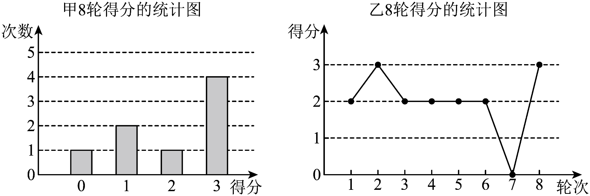

2026年北京市中考数学试卷 · 数学解答题 第23题
23. 若干名学生参加编程比赛，比赛共8轮，每轮有3道题，每人每轮的得分为该轮答对题目的数量（得分为整数）．已知甲、乙两名学生8轮得分的情况如下：

根据以上信息，回答下列问题：
（1）甲8轮得分的平均数为________，乙8轮得分的平均数为________；
（2）记甲、乙8轮得分的方差分别为和，则________（填“”“”或“”）；
（3）如果丙8轮得分的中位数为，那么丙8轮得分的平均数是不是一定大于乙8轮得分的平均数？若是，请说明理由；若不是，请举出反例．